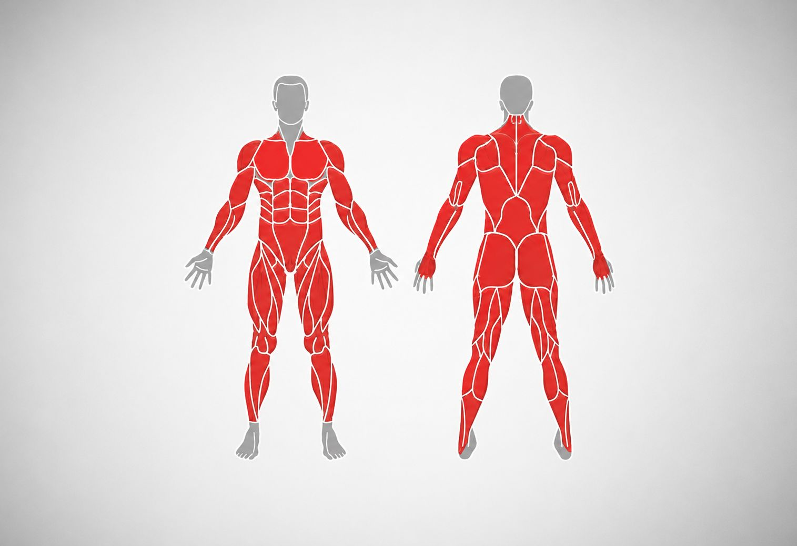
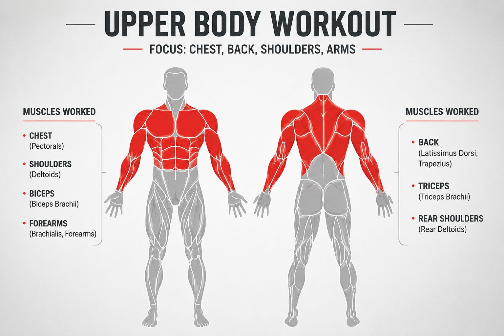
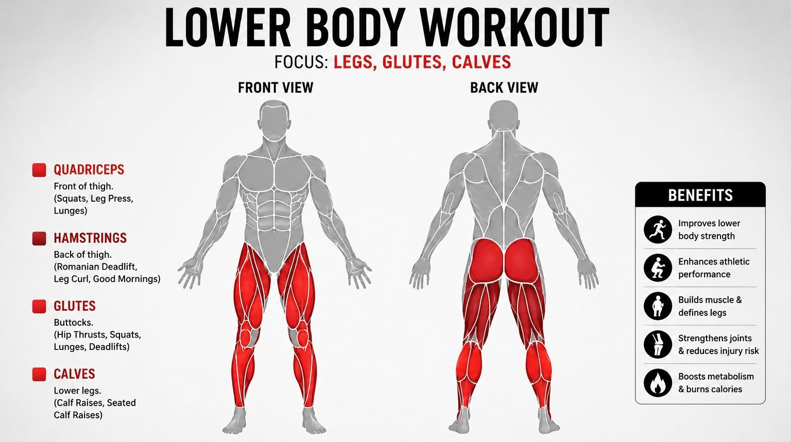
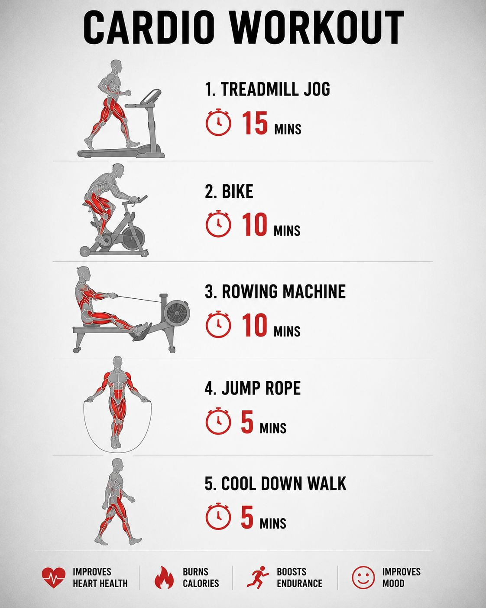

Explore our collection of expertly crafted workout plans designed to help you achieve your fitness goals. Whether you're a beginner looking to get started or an experienced athlete aiming to take your training to the next level, we have a plan for you. Our workout plans are tailored to various fitness levels and goals, including strength training, weight loss, muscle building, and overall fitness. Each plan includes detailed exercises, sets, reps, and rest periods to ensure you get the most out of your workouts. Start your fitness journey with us and discover the perfect workout plan to transform your body and boost your confidence.
A comprehensive workout targeting all major muscle groups for overall strength and fitness.

Squats: Stand with feet shoulder-width apart, lower your body by bending your knees and hips, keeping your back straight. Push through your heels to return to the starting position.
Push-ups: Start in a plank position, lower your body until your chest nearly touches the ground, then push back up.
Deadlifts: Stand with feet hip-width apart, grip the barbell with hands shoulder-width apart, and lift the weight by extending your hips and knees.
Dumbbell Rows: Sit on a bench with a dumbbell in each hand, lean forward slightly, and pull the weights towards your torso.
Plank: Start in a push-up position but rest on your forearms, keeping your body straight from head to heels.
Focus on building strength in your chest, shoulders, back and arms.

Bench Press: Lie on a bench with feet flat on the ground, grip the barbell slightly wider than shoulder-width, and lower it to your chest before pushing it back up.
Shoulder Press: Sit on a bench with a dumbbell in each hand, press the weights overhead until your arms are fully extended.
Pull Ups: Grab the bar with an overhand grip, hang from it with your arms fully extended, and pull your body up until your chin is above the bar.
Bicep Curls: Stand with a dumbbell in each hand, curl the weights towards your shoulders while keeping your upper arms stationary.
Tricep Pushdowns: Attach a rope handle to a cable machine, grasp the rope with both hands, and push the rope down until your arms are fully extended.
Build strength in your legs, glutes and calves.

Squats: Stand with feet shoulder-width apart, lower your body by bending your knees and hips, keeping your back straight. Push through your heels to return to the starting position.
Leg Press: Sit on a leg press machine with your feet shoulder-width apart on the platform, push the weight away from you by extending your legs, then slowly return to the starting position.
Walking Lunges: Step forward with one leg and lower your body until both knees are bent at a 90-degree angle, then push through the front heel to return to the starting position and repeat with the other leg.
Hamstring Curls: Lie face down on a hamstring curl machine, hook your heels under the padded lever, and curl your legs towards your glutes.
Calf Raises: Stand with the balls of your feet on a raised surface, lift your heels as high as possible, then slowly lower them back down.
Improve endurance and burn calories.

Treadmill Jog: Set the treadmill to a comfortable jogging pace and maintain a steady rhythm for the duration of the workout.
Bike: Use a stationary bike, adjusting the resistance to a level that challenges you while allowing you to maintain a consistent pace.
Rowing Machine: Sit on the rowing machine, grip the handle, and use a smooth, powerful motion to pull the handle towards your torso while extending your legs.
Jump Rope: Hold the handles of the jump rope, swing it over your head and under your feet in a continuous motion, jumping with each rotation.
Cool Down Walk: After completing the cardio exercises, take a slow, relaxed walk to help your heart rate return to normal and prevent stiffness.